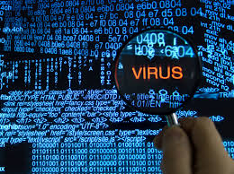

Un virus informático es un tipo de software malicioso, o malware, que se propaga entre computadoras y causa daños a los datos y al software. Los virus informáticos tienen como objetivo interrumpir los sistemas, causar problemas operativos importantes y provocar la pérdida y filtraciones de datos.
Más infoLos virus informáticos se transmiten al conectar dispositivos USB infectados, al abrir correos electrónicos con archivos adjuntos o enlaces maliciosos, al visitar páginas web comprometidas que descargan malware automáticamente, al instalar programas piratas o descargados desde sitios no confiables, y también a través de enlaces o archivos compartidos por redes sociales y aplicaciones de mensajería.

Los virus informáticos aparecieron en los años 70 como parte de experimentos académicos sobre redes y programas autorreplicantes. El primero conocido, llamado "Creeper", no era malicioso, sino una prueba técnica que simplemente mostraba un mensaje en pantalla. Sin embargo, con el crecimiento de las computadoras personales en los años 80 y el uso de disquetes, los virus comenzaron a propagarse más fácilmente entre usuarios
Con el tiempo, su propósito cambió: muchos dejaron de ser simples curiosidades para convertirse en herramientas creadas con intenciones maliciosas, como dañar sistemas, robar datos o controlar dispositivos de forma remota. Hoy en día, los virus forman parte del panorama más amplio del malware y representan una amenaza constante en el mundo digital.